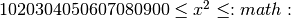

Concealed Square¶
Problem 206
Find the unique positive integer whose square has the form 1_2_3_4_5_6_7_8_9_0, where each “_” is a single digit.
Solution
Generate squares which have 19 digits, in the range 10... to 19... These will be in the range sqrt 1929394959697989990`
A search of all of these candidate values for  is
a search space of 378,925,613 values, all of which are proper squares.
is
a search space of 378,925,613 values, all of which are proper squares.
import math
import time
Digits of a large number.
def digits(x):
"""
Digits as a list, reversed.
>>> d=list(digits(1020304050607080900))
>>> d
[0, 0, 9, 0, 8, 0, 7, 0, 6, 0, 5, 0, 4, 0, 3, 0, 2, 0, 1]
>>> d[::-2]
[1, 2, 3, 4, 5, 6, 7, 8, 9, 0]
"""
while x != 0:
yield x % 10
x //= 10
Fixed-length digits of a large number.
def ndigits(x, n=9):
"""
>>> d=list(ndigits(0, 9))
>>> d
[0, 0, 0, 0, 0, 0, 0, 0, 0]
"""
for i in range(n):
yield x % 10
x //= 10
Is this sequence of digits a valid hidden square?
from itertools import islice
def hidden_square1(x):
"""
Slower check using iterators.
>>> hidden_square1(1020304050607080900)
True
>>> hidden_square1(1929394959697989990)
True
>>> tuple(islice(digits(1020304050607080900), 0, None, 2))
(0, 9, 8, 7, 6, 5, 4, 3, 2, 1)
"""
alternating = tuple(islice(digits(x), 0, None, 2))
return alternating == (0,9,8,7,6,5,4,3,2,1)
def hidden_square2(x):
"""
Fast check using string conversion.
>>> hidden_square2(1020304050607080900)
True
>>> hidden_square2(1929394959697989990)
True
"""
chars = str(x)[::2]
return chars == '1234567890'
def hidden_square3(x):
"""
Fast check using string conversion and more complex logic;
interestingly, it's slower.
>>> hidden_square3(1020304050607080900)
True
>>> hidden_square3(1929394959697989990)
True
"""
chars = str(x)
return (
chars[0] == '1' and
chars[2] == '2' and
chars[4] == '3' and
chars[6] == '4' and
chars[8] == '5' and
chars[10] == '6' and
chars[12] == '7' and
chars[14] == '8' and
chars[16] == '9'
)
Compute an answer – largish search space of 378,925,613
def answer1():
"""Enumerate all 378,925,613 values.
About 1,000,000 per second takes at most 378 seconds or 5 minutes.
"""
start= time.perf_counter()
low = int(math.sqrt(1020304050607080900))
high = int(math.sqrt(1929394959697989990))
for n, x in enumerate(range(low, high)):
#if n % 10000 == 0: print(n, int(n/(time.perf_counter()-start)), x**2, )
if hidden_square2(x**2):
#print( "Examined {0}, {1:.2f}s: {2}".format(n, time.perf_counter()-start, x**2) )
return x
Confirm the answer.
def confirm( ans ):
assert ans == 1389019170, "{0!r} Incorrect".format(ans)
Performance question.
def performance():
import timeit
t1= timeit.timeit( 'hidden_square1(1020304050607080900)', 'from euler206 import hidden_square1' )
t2= timeit.timeit( 'hidden_square2(1020304050607080900)', 'from euler206 import hidden_square2' )
t3= timeit.timeit( 'hidden_square3(1020304050607080900)', 'from euler206 import hidden_square3' )
print( "digits {t1}, string {t2}, string {t3}".format_map(locals()))
Create some output.
if __name__ == "__main__":
import doctest, sys
results= doctest.testmod()
if results.failed: sys.exit(results.failed)
# performance()
ans= answer1()
confirm( ans )
print( "The unique hidden square:", ans )